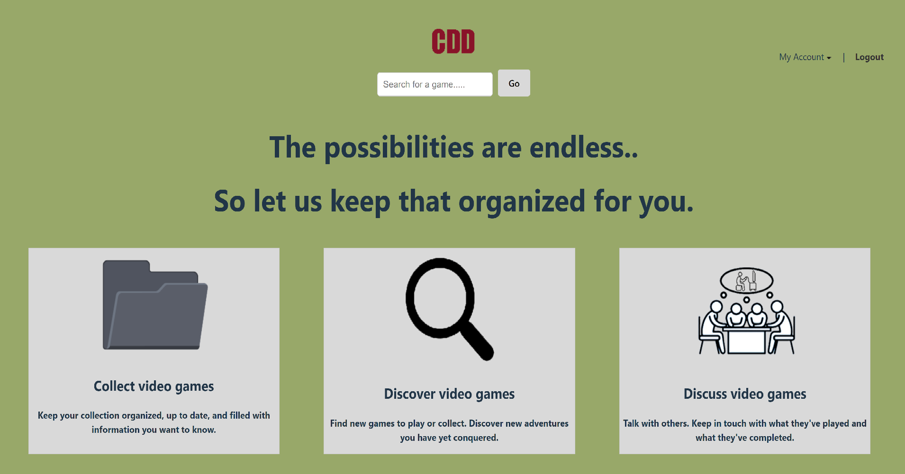
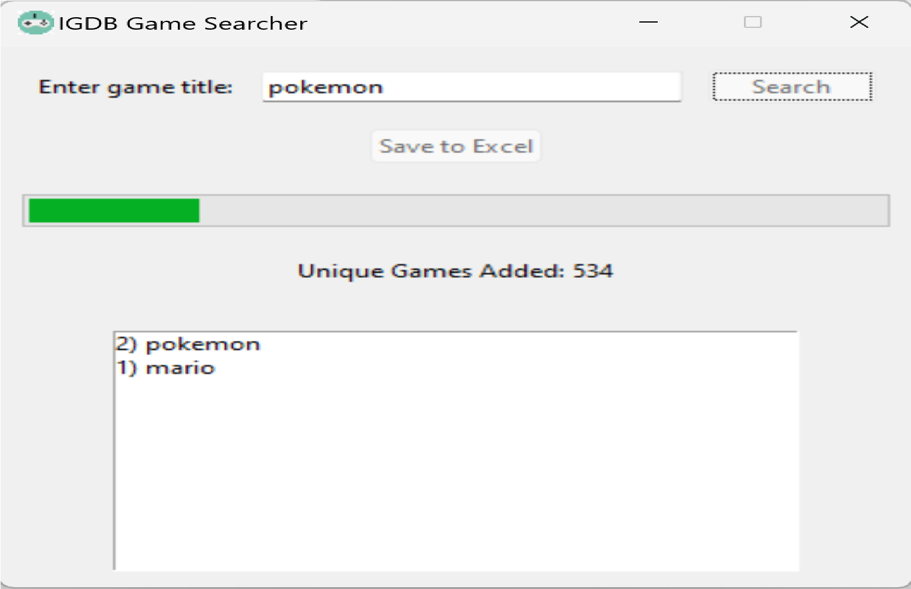

Project Overview
The CDDWebsite is a video game collection database site where users can manage their game collections and wishlists. The platform also features an admin panel for database management. Built with React and Node.js, the project utilizes Supabase for data storage and authentication.
Key Features
- User Features: Add games to personal collections and wishlists. Search and filter through the game database.
- Admin Features: Manage the database with the ability to add, update, or delete games.
- Custom Game Additions: Users can submit new games to the database if they do not already exist.
Technical Details
- Frontend: React for a dynamic and responsive user interface.
- Backend: Node.js and Express.js for API development and server-side logic.
- Database: Supabase for user authentication and storing game data.
- Authentication: Role-based access control for users and admin accounts, secured with Supabase's built-in authentication features.
- Deployment: Hosted on modern cloud platforms like Vercel or Heroku (mention actual platform used).
Challenges & Solutions
- Scalability: Designed a database schema to efficiently support a large and growing collection of games.
- Search Optimization: Implemented efficient filtering and search functionalities to improve performance.
- Role-Based Access: Developed a secure admin panel with role-based permissions to manage sensitive data.
Future Improvements
- Add social features like sharing collections with friends.
- Incorporate data visualization, such as trends and stats in user collections.
- Enhance the search functionality with advanced filters and sorting options.
Media


×

Key Takeaways
This project helped me enhance my skills in API development, database management, and role-based access control. It showcases my ability to design, develop, and deploy a full-stack web application with a focus on scalability and user experience.